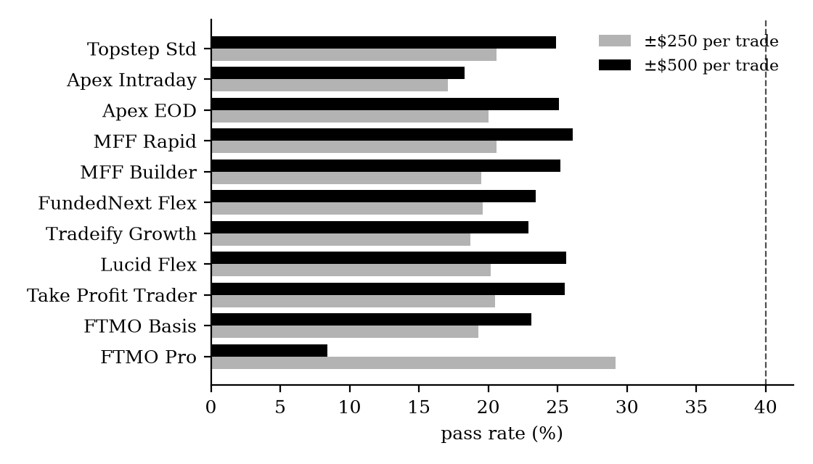
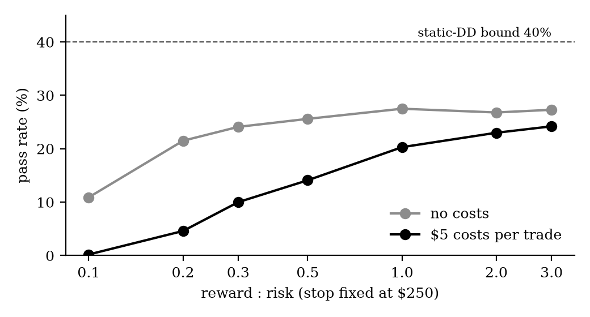
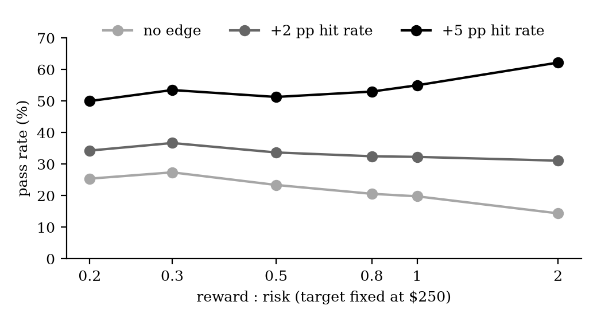

Independent Researcher
November 2026
Proprietary trading firms sell evaluation accounts in which a trader must reach a profit target before hitting a drawdown limit. This paper asks how often a trader with no edge passes such an evaluation, and how the answer depends on the firms' rules and on the trader's choice of reward-to-risk. Using Monte-Carlo simulation of 20 standard 50K futures evaluation accounts from eight firms, with intraday price paths, trailing drawdowns, locks, daily loss limits, consistency rules and costs, I find that the gambler's-ruin bound of 40% for a static drawdown falls to roughly 17–26% under realistic rules, with the trailing drawdown as the main driver. With a fixed profit target per trade, low reward-to-risk (a wide stop) passes slightly more often without an edge (27% at 0.3:1 versus 20% at 1:1), mainly because fewer trades are needed and costs weigh less. The advantage disappears once a small edge is present: with a five-point higher hit rate, 2:1 passes most often (62%). Low reward-to-risk is therefore not a substitute for an edge.
Keywords: proprietary trading, evaluation accounts, gambler's ruin, Monte-Carlo simulation, trailing drawdown, reward-to-risk
JEL Classification: C15, C63, G11, G17
All results are simulations. Firm rules as published on the firms' websites in October 2026 and may have changed. Not investment advice. Code and data for the figures: github.com/benediktille-design/prop-firm-zero-edge
Retail futures prop firms offer evaluation accounts for a fee. A typical 50K account requires a profit of $3,000 before the account balance falls a trailing $2,000 below its high. Traders who pass receive a funded (simulated) account and can request payouts. Because the loss per attempt is capped at the fee while payouts are open-ended, it is often argued that such accounts are attractive even without a trading edge, and that a high win rate (low reward-to-risk) helps to pass.
This paper measures both claims. It establishes a zero-edge baseline: the pass rate that pure chance achieves under each firm's rules. Any strategy that is meant to be traded on these accounts should be judged against this baseline rather than against zero.
For a fair random walk that starts at zero and stops at either +T (target) or −D (drawdown), the classical gambler's-ruin result gives
P(pass) = D / (D + T)(1)
For a 50K account (T = $3,000, D = $2,000) this is 40%. The bound holds for any position sizing as long as there is no edge and no cost. Every additional rule (a drawdown that trails the high, a daily loss limit, a consistency requirement or minimum trading days) and every cost can only lower this number. Equation (1) is therefore the ceiling for a zero-edge trader.
Each account is described by the tuple (target, drawdown, lock, intraday/end-of-day trailing, daily limit, hard/soft limit, consistency, minimum days), taken from the firms' websites. The loss limit at time t is
Floort = min(Peakt − D, Start + Lock)(2)
where Peakt is the highest end-of-day balance (end-of-day trailing) or the highest intraday balance (intraday trailing). The account fails when the balance touches the floor, including open profit and loss inside a trade.
Prices follow a fair random walk in ticks, so every trade is simulated as a path and intraday drawdown rules apply while the trade is open. A trade with stop S and target R·S hits the target with probability S / (S + R·S) = 1 / (1 + R), which is exactly break-even before costs. An edge is modelled as a higher hit rate than this break-even probability. The trader takes two trades per day with fixed size; costs are $5 per round turn unless stated. Each configuration is simulated with 4,000–10,000 independent attempts; the sampling error of a pass rate near 25% is about ±0.7 percentage points. As a check, the simulator reproduces Equation (1) for a static drawdown (40.1%).
With a fixed 1:1 coin flip, nearly all accounts land in a narrow range: about 20% with ±$250 per trade and about 25% with ±$500 (Figure 1). The trailing drawdown alone cuts the theoretical 40% roughly in half. Larger trades pass more often because fewer steps are needed to reach the target, which gives the trailing floor fewer chances to move up. Consistency rules rarely bind in this setting, since two trades of $500 cannot exceed 50% of a $3,000 target in one day. The outlier is FTMO Pro with a hard daily limit of $1,000: at ±$500, two losing trades on one day end the account, and the pass rate falls to 8%.

Figure 1. Zero-edge pass rates for a 1:1 coin flip, two trades per day, $5 costs.
Dashed line: static-drawdown bound from Equation (1).
Holding the stop at $250 and varying the target, low reward-to-risk is clearly worse (Figure 2). At 0.1:1 the target is $25 and a $5 cost removes a fifth of every win; the pass rate drops to 0.2%. Even without costs, low reward-to-risk passes less often because many more trades are needed to reach the target.

Figure 2. Zero-edge pass rate versus reward-to-risk with a fixed $250 stop (typical end-of-day account).
The picture reverses when the target per trade is fixed at $250 and the stop widens instead. Now low reward-to-risk means larger risk per trade and fewer trades to the goal, and it passes slightly more often without an edge: 27.4% at 0.3:1 against 19.8% at 1:1 (Table 1). The source of this advantage is the larger position, not the high win rate itself; it is the same effect as in Section 4.1.
With an edge, the ranking changes. What matters is the distance between the actual hit rate and the break-even hit rate. Two extra percentage points give about 31–37% at every reward-to-risk; five extra points give 50–62%, with 2:1 best. With high costs ($65 per trade, roughly a full-size contract with slippage), only low reward-to-risk survives at all.
Table 1. Pass rate (%) by reward-to-risk and edge, target fixed at $250 per trade.
| Costs | Edge | 0.2:1 | 0.3:1 | 0.5:1 | 0.8:1 | 1:1 | 2:1 |
|---|---|---|---|---|---|---|---|
| $5 | none | 25.4 | 27.4 | 23.4 | 20.6 | 19.8 | 14.4 |
| $5 | +2 pp | 34.3 | 36.7 | 33.7 | 32.5 | 32.3 | 31.1 |
| $5 | +5 pp | 50.0 | 53.5 | 51.3 | 53.0 | 55.0 | 62.2 |
| $65 | none | 9.7 | 7.6 | 2.2 | 0.2 | 0.1 | 0.0 |
| $65 | +5 pp | 26.8 | 23.9 | 10.1 | 3.1 | 1.3 | 0.0 |
MyFundedFutures Builder 50K rules; Topstep Standard gives values within ±1 point. Edge = hit rate above break-even in percentage points.

Figure 3. Pass rate versus reward-to-risk with a fixed $250 target, $5 costs.
Trade outcomes are symmetric and independent; real strategies have fat tails, slippage spikes and clustered losses, which lower pass rates further, especially for wide stops. Only the evaluation phase is modelled; whether a pass leads to payouts depends on funded-account rules (buffers, payout caps, consistency) that are not included here. Firm rules change frequently. Finally, a pass rate is not an expected value: the economics of an attempt also depend on fees, resets and payout sizes.
Without an edge, no 50K futures evaluation in this sample passes more often than about 30%, well below the 40% gambler's-ruin bound, because trailing drawdowns, daily limits and costs work against the trader. Choosing a low reward-to-risk raises a zero-edge pass rate by a few points at best, and only when it means taking more risk per trade. With even a small edge, the size of the edge dominates and a moderate reward-to-risk is preferable. A strategy for prop accounts should therefore be evaluated against the zero-edge baseline of the specific account, not against a pass rate of zero.
Feller, W. (1968). An Introduction to Probability Theory and Its Applications, Vol. 1, 3rd ed. Wiley. Chapter XIV: Random walk and ruin problems.
Firm rule pages (accessed October 2026): Apex Trader Funding, FTMO, FundedNext, Lucid Trading, MyFundedFutures, Take Profit Trader, Topstep, Tradeify.